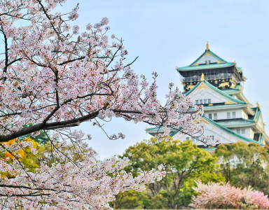

Osaka
Ver detalles

Tokyo
La Llegada

Nos alojamos en el lujoso Hotel Okura Tokyo, ubicado en el barrio de Toranomon. El hotel cuenta con una vista increíble de la ciudad y ofrece una amplia gama de servicios, que incluyen un spa, una piscina, restaurantes de renombre y un bar lounge. Quedamos encantados con la atención a los detalles y la calidad del servicio.++

Comenzamos nuestro recorrido por la ciudad con una visita al famoso Templo Sensoji, uno de los templos budistas más antiguos e importantes de Japón. Caminamos por la calle comercial Nakamise, donde encontramos muchas tiendas que vendían artículos típicos japoneses, como kimonos, abanicos y comidas tradicionales. Luego, visitamos el icónico cruce de Shibuya, uno de los más transitados del mundo, donde observamos la sincronización de los peatones cruzando la calle. Al día siguiente, visitamos el Parque Ueno, que alberga el Museo Nacional de Tokio, donde pudimos conocer la historia y la cultura japonesa. Por la noche, fuimos a un típico Izakaya, un bar japonés que sirve una gran variedad de platos y bebidas.
Tokio es famosa por sus grandes almacenes y centros comerciales, y no podíamos dejar de visitar algunos de ellos. Fuimos al famoso distrito comercial de Ginza, donde encontramos tiendas de las marcas más renombradas del mundo. También visitamos el distrito de Akihabara, conocido como el centro de la electrónica y el entretenimiento de Tokio, donde encontramos diversas tiendas de videojuegos, electrónica y mangas.
No se puede hablar de Japón sin mencionar su gastronomía. Tuvimos la oportunidad de probar una gran variedad de platos típicos, como sushi, sashimi, ramen y tempura, además de dulces tradicionales como el mochi.
Nuestro viaje a Tokio con la agencia Viajes Jornada fue una experiencia inolvidable. El equipo de la agencia se encargó de todos los detalles, desde la reserva del hotel hasta la elección de los mejores lugares para visitar y comer. Recomendamos Viajes Jornada a todos los que deseen hacer un viaje increíble a Japón.